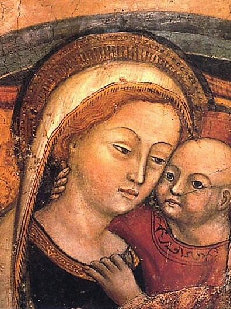

Plegaria a la Madre del Buen Consejo
Gloriosísima Virgen, elegida por el Eterno Consejo para Madre del verbo Eterno humanado, tesorera de las Divinas Gracias y Abogada de los pecadores; yo indignísimo siervo vuestro recurro a vos, a fin de que os dignéis ser mi guía y consejera en este valle de lágrimas.
Alcanzadme por la sangre preciosísima de vuestro Hijo, el perdón de mis pecados, la salvación de mi alma y los medios necesarios para conseguirla.
Obtened para la Iglesia el triunfo sobre sus enemigos y la propagación del reinado de Jesucristo en toda la tierra. Así sea.
← Regresar al inicio